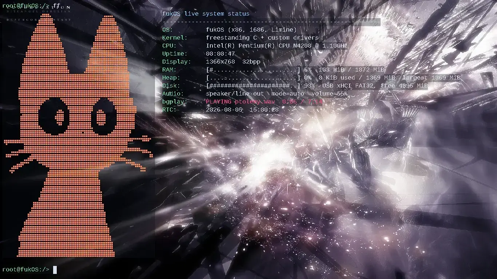
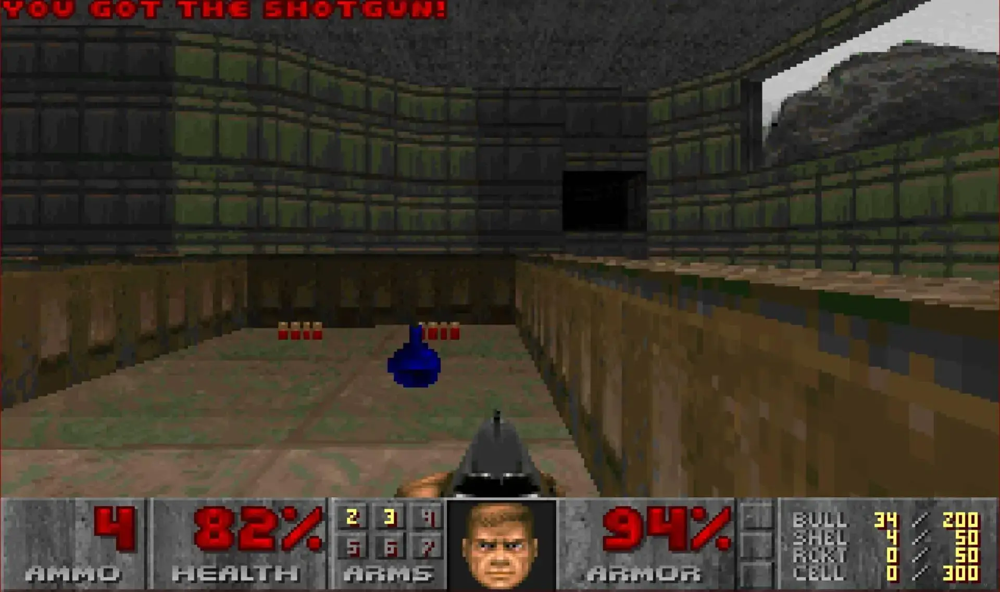
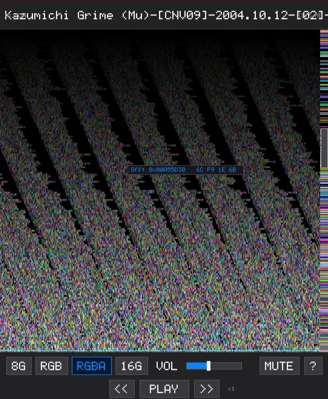

Loading track…
checking ListenBrainz
I build low-level software that has to survive contact with real hardware - operating systems, tooling and web apps written from scratch in C, Assembly, Kotlin and TypeScript.
checking ListenBrainz
Hey, I'm encrize - an 18-year-old developer and cybersecurity enthusiast. I'm usually online, building something, taking something apart, or trying to figure out why it broke.
I make web sites, apps, games and some low-level software, and most of my time goes into operating system and systems programming in C.
I also have a small devblog with short build logs at blog.encrize.vip, and I keep a page of notes with saved links and project ideas.
A 32-bit x86 hobby operating system written from scratch in C with fuk1 - a small interpreted language - running on top of it. Paging, VFS, userspace and an x86_64 transition are on the roadmap.
Battery telemetry reported by my Linux laptop, Android phone and iphone 'homelab'.
Ten projects, from a hobby kernel to browser tools people use every day.


Raw-data visualizer that renders any file as pixels and audio. Written in C with SDL2.

Secure password, diceware passphrase and BIP39 seed generator that never leaves your browser.
Universal gift tracker built with Kotlin and Jetpack Compose. Backups in JSON, CSV and PDF.
Custom browser new-tab start page - a minimal personal dashboard with quick links.
Mail me! Collaborations, bugs in my projects, questions or just talking.